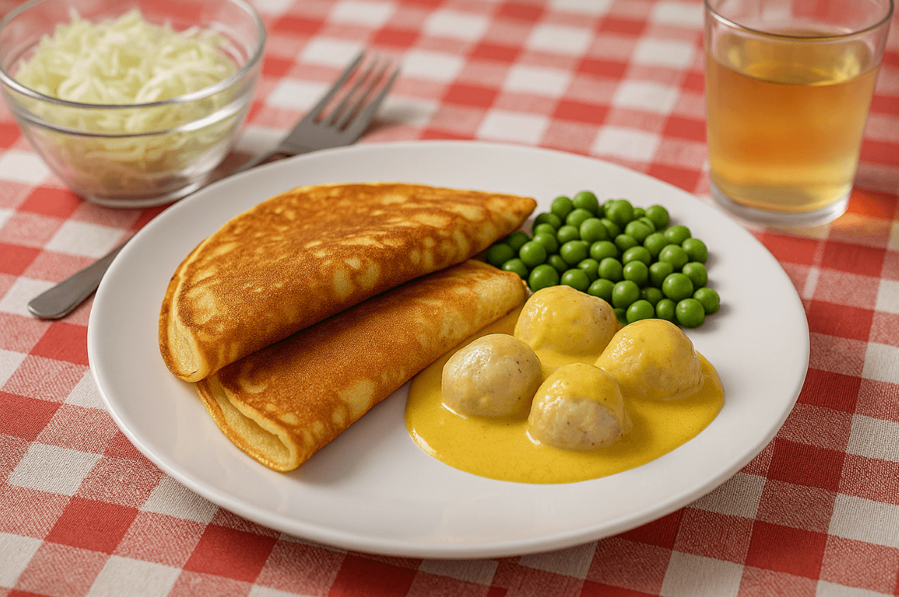

Fiskbulls-pannkakor i currysås
Pannkakor fyllda med fiskbullar ger en oväntad nordisk twist, medan currysåsen tillför värme och aromatiska kryddor. En vågad rätt som kombinerar mild fisk och exotisk curry till en överraskande matupplevelse.
Ingredienser
- 3 dl vetemjöl
- 6 dl mjölk
- 3 ägg
- 1 msk smör
- 1 burk fiskbullar (400 g)
- 2 dl currysås
- 1 msk hackad dill
Så här gör du
- Blanda pannkakssmet.
- Hacka fiskbullarna och blanda i smeten.
- Stek pannkakorna.
- Servera med currysås och dill.
Serveringsförslag

- 